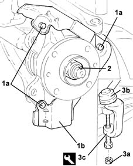
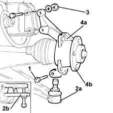
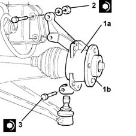
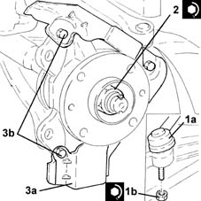
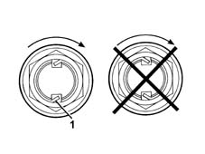

4450C10 front pillar (one), l/h or r/h complete with wheel hub - r+r with wheel removed - check wheel geometry separately
- Path
- Procedures > 44 SUSPENSION AND WHEELS > 4450 WHEELS AND HUBS > 4450C front wheel hubs > 4450C10 front pillar (one), l/h or r/h complete with wheel hub - r+r with wheel removed - check wheel geometry separately
- Kind
- repair procedure (removal / refitting; the operation number is the code)
- Applies to
- all engines; all production periods
- Interactive page
- https://sloeber94.github.io/elrnDB-lYpsln/en/#/2429265
Applies to: all engines; all production periods
 Removing
Removing
 Refitting
RefittingProceed with removal 3310A48 front brake disc - r r .
1. Undo the bolts (1a) and remove the front brake disc shield (1b).
2. Remove the staking using a hammer and chisel, then undo the front wheel hub fixing nut.
3. Undo the nut (3a) and disconnect the steering link from the front steering knuckle using the tool (3b).
 | Name | Country |
|---|---|---|
3c | Extractor | 1.871.000.700 |

Applies to: all engines; all production periods
1. Undo the bolt fixing the lower track control arm to the steering knuckle.
2. Disconnect the lower track control arm (2a) from the steering knuckle using a suitable tool (2b).
3. Undo the bolts fixing the steering knuckle to the shock absorber.
4. Remove the steering knuckle (4a) complete with wheel hub (4b).

Applies to: all engines; all production periods
Refitting
Removing1. Place the steering knuckle (1a) complete with wheel hub (1b) in its housing and connect it to the driveshaft.
2. Tighten the bolts fixing the steering knuckle to the shock absorber to the recommended torque.
 | Fastening | Component | Ø | Value (daNm) |
|---|---|---|---|---|
2 | Bolt | FRONT HUB STEERING KNUCKLE. | M10 | (Shock absorber side) 6.2 ÷ 6.8 |
3. Connect the lower track control arm to the steering knuckle and tighten the bolt to the recommended torque.
| Fastening | Component | Ø | Value (daNm) |
|---|---|---|---|---|
3 | Bolt | FRONT SUSPENSION LOWER LEVER | M10 | (Hub steering knuckle side) 5.9 ÷ 7.2 |

Applies to: all engines; all production periods
1. Connect the steering link (1a) to the front steering knuckle and tighten the nut (1b) to the recommended torque.
| Fastening | Component | Ø | Value (daNm) |
|---|---|---|---|---|
1b | Nut | ADJUSTABLE STEERING LINKS | M10 | (Steering knuckle side) 3.6 ÷ 4.4 |
2. Tighten a new nut fixing the front wheel hub to the driveshaft to the recommended torque using the angle tightening tool.
| Fastening | Component | Ø | Value (daNm) |
|---|---|---|---|---|
2 | Nut | FRONT HUB WITH BEARINGS | M22 | (Driveshaft side) 6.6 ÷ 7.3 + 55? ± 2 |
| Name | Country |
|---|---|---|
- | Protractor | 1.860.942.000 |
3. Place the front brake disc guard (3a) back in its housing and secure it using the bolts (3b).
Applies to: engines: 1.3 JTD; all production periods
1. Connect the steering link (1a) to the front steering knuckle and tighten the nut (1b) to the recommended torque.
| Fastening | Component | Ø | Value (daNm) |
|---|---|---|---|---|
1b | Nut | ADJUSTABLE STEERING LINKS | M10 | (Steering knuckle side) 3.6 ÷ 4.4 |
2. Tighten a new nut fixing the front wheel hub to the driveshaft to the recommended torque using the angle tightening tool.
| Fastening | Component | Ø | Value (daNm) |
|---|---|---|---|---|
2 | Nut | FRONT HUB WITH BEARINGS | M24 |
| Name | Country |
|---|---|---|
- | Protractor | 1.860.942.000 |
3. Place the front brake disc guard (3a) back in its housing and secure it using the bolts (3b).

Applies to: engines: 1.3 JTD; all production periods
1. Stake the collar of the nut twice as shown in the figure.

Applies to: engines: 1.3 JTD; all production periods
Proceed with refitting 3310A48 front brake disc - r r .